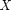
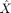
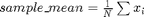
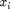
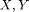
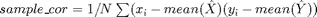
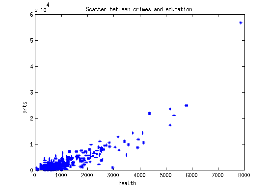

Lab 5, Correlations and covariances in real-world. (Due on 09:00 AM, Mar 28, 2015)
From the previous example, for a certain distribution , if we get a sample of , denoting as , we are able to calculate the empirical average or mean of the sample, , for  in . If we are given samples for two random variables  respectively, we can evaluate their relationship by calculating the sample correlation, .
Contents
Load real-world data
The Matlab sample data sets ”cities” contains the average ratings from 329 cities for 9 categories. The higher the ratings are, the more satisfied the citizens are. You can load the data by using ’load cities’ in Matlab.
load cities
Now you can see in the Workspace panel, 'categories', 'names', 'ratings' show up. Print the 'categories', there are 9 values,
categories
categories = climate housing health crime transportation education arts recreation economics
The 'ratings' is a matrix with 329 rows and 9 columns. Each column is a sample of size 329 for the corresponding category. Scatter plot (also see Figure 10.1) is a way to visualize the sample pairs of the two random variables.
Scatter plot
X_hat = ratings(:,3); % Ratings for crimes Y_hat = ratings(:,7); % Ratings for education plot(X_hat,Y_hat,'b*'); xlabel(categories(3, :), 'FontSize',12,'FontWeight','bold'); ylabel(categories(7, :), 'FontSize',12,'FontWeight','bold'); title('Scatter between crimes and education');
Sample covariance and sample correlation
The scatterplot shows there might be a correlation between the two ratins, because one increases, the other one also increases. To measure how correlated they are, use the cov() and corr() Matlab function.
format short
sCov = cov(X_hat, Y_hat)
sCor = corr(X_hat, Y_hat)
sCov =
1.0e+07 *
0.1006 0.4031
0.4031 2.1551
sCor =
0.8658
The sample correlation is very large, which confirm the ratings of the two categories are positive correlated. We expect 0.8 unit of rating increasing for 'arts' by increasing one unit of rating for 'health'.
Assignments
Question 1. Choose 3 pairs of categories of your interest, e.g. education vs crime, recreation vs arts, economics vs education. Plot the scatter plots for the ratings of each pair respectively. Calculate their sample covariance and correlation. Summarize your observation in one paragraph.
Question 2. Which two categories are least correlated? (Hint, corr(ratings) gives you pairwise correlations. Least correlated means the correlation is closest to 0, not -1.)